Invasion USA

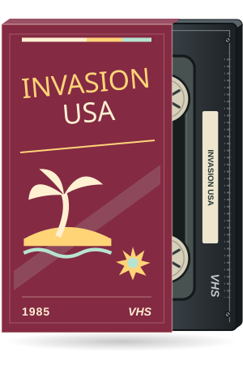

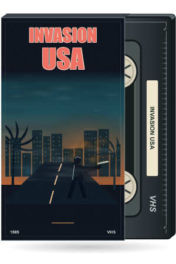
A lone defender on a palm-lined causeway facing a burning city.
All 16 movies in screening order. Left: archived previous artwork. Right: the approved posters now used by the project's event pages, with original PNG sleeve paintings, IMDb-inspired title lettering, and outlined tape labels. Repeat screenings share the updated artwork.


A lone defender on a palm-lined causeway facing a burning city.
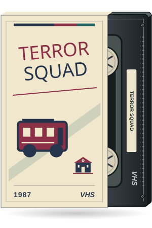
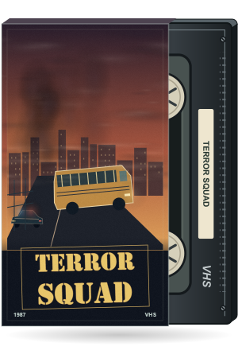
An abandoned school bus, pursuit lights, and smoke over a small town.

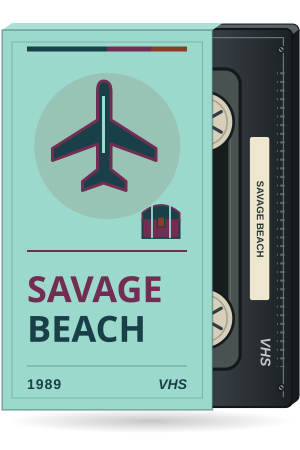
A stranded cargo plane, a remote lagoon, and a half-buried gold chest.
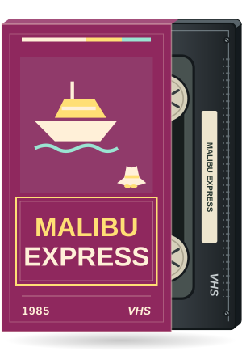
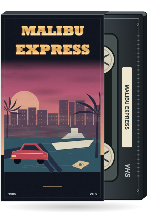
A marina at sunset, a yacht, and a red sports car seen from above.
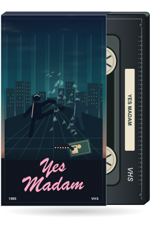
Two investigators cross a glass-filled office with stolen microfilm in the foreground.
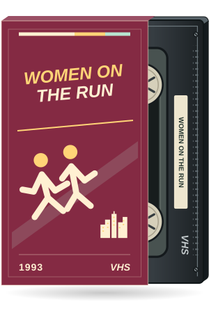

Two fugitives move through a rain-swept neon alley beneath the city skyline.
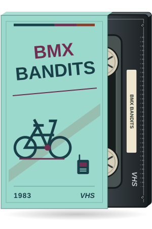

Three cyclists race along a curving concrete canal beside a walkie-talkie.
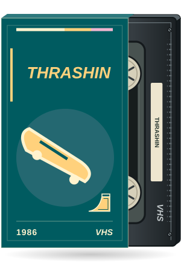
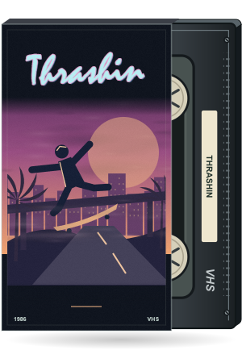
A skater hangs over an illuminated downhill road through Los Angeles.
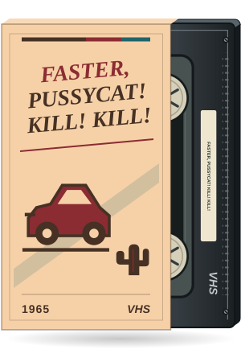
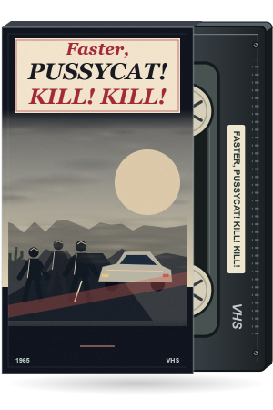
A desert highway, three dangerous silhouettes, and a parked sports car.
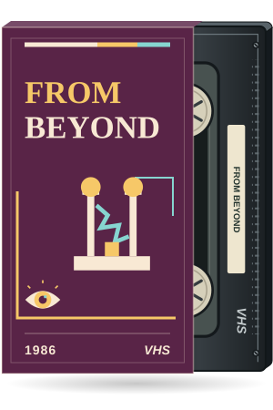

An electromagnetic resonator opens a magenta portal filled with impossible eyes.
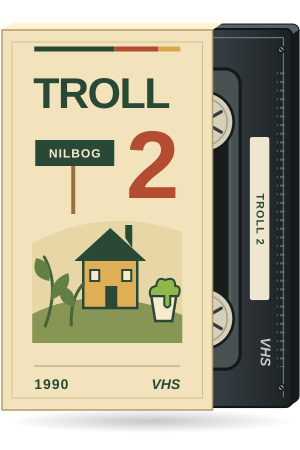
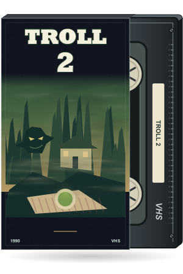
A goblin shape hides in the forest behind a farmhouse and an ominous picnic.
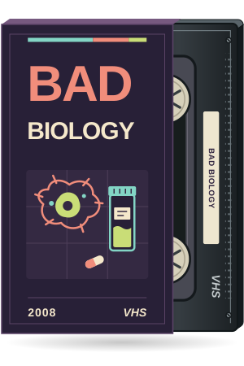

Two anonymous profiles face a suspended cell in a midnight laboratory.
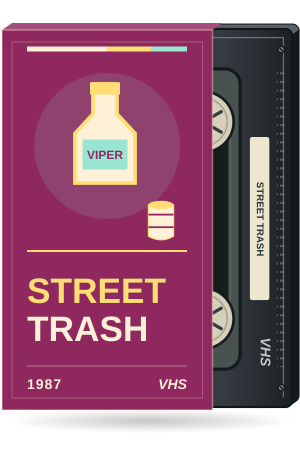

A discarded bottle throws unnatural color over a nocturnal junkyard.
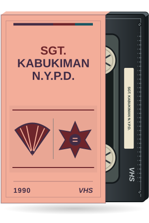
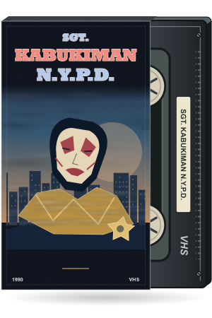
An original theatrical mask floats above a New York street, gold fabric, and a badge.

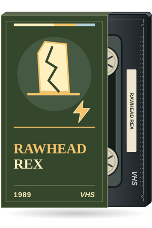
A storm-lit field, a cracked standing stone, and a looming ancient creature.
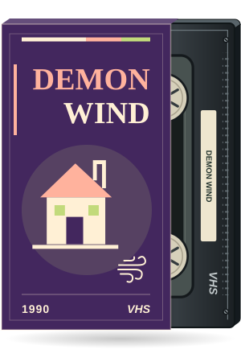
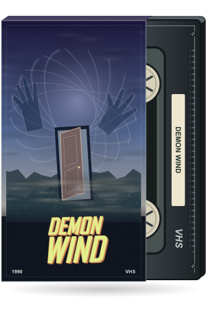
A farmhouse door stands in a field as ghostly hands spiral out of the storm.